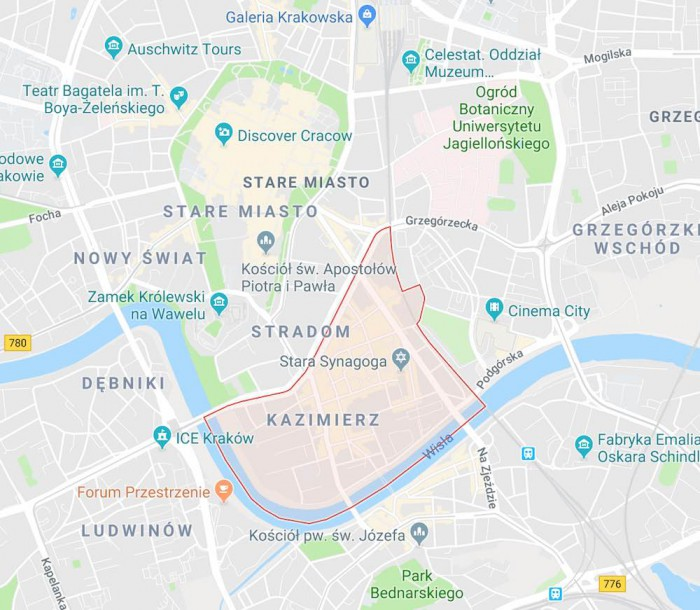
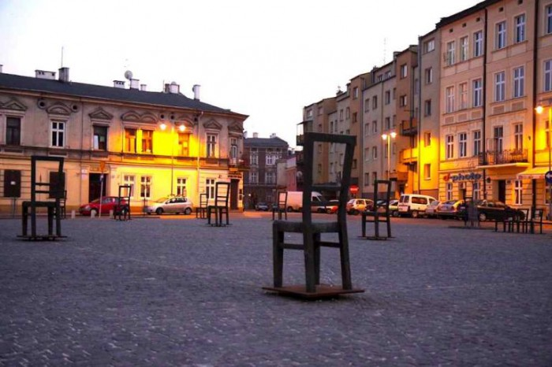

Kazimierz is one of the most culturally rich and historically significant neighborhoods in Kraków. Once an independent town, it became the center of Jewish life in the city for over 500 years. Before World War II, Kazimierz was home to a vibrant Jewish community, whose traditions, synagogues, and daily life shaped the district.
During our visit, we’ll walk through narrow cobblestone streets, past synagogues like the Old Synagogue and Remuh Synagogue, and explore Jewish cemeteries, memorials, and museums that preserve this history. Today, Kazimierz is also a hub for art, street food, and culture—a place where past and present coexist. The area played a key role in Schindler’s List, parts of which were filmed here, adding another layer to its story. Our visit is an opportunity to reflect on Jewish heritage, resilience, and the impact of history on a living community.

